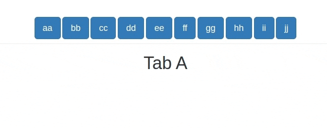

Introduction
Let’s talk about injections… Code & data injections, to be specific.
If you have built any sizeable shiny app, then you’ve probably had to handle many hidden tab panels.
You end up with code which looks like this:
ui.R
# btns to switch from one tab to the other:
btns <- lapply(letters[1:10], \(letter) {
actionButton(
inputId = paste0("btn_", letter),
label = paste0(letter, letter),
class = "btn-primary btn-lg"
)
})
tabs <- tabsetPanel(
id = "tabs",
type = "hidden",
selected = "a",
tabPanelBody(value = "a", tags$h1("Tab A")),
tabPanelBody(value = "b", tags$h1("Tab B")),
tabPanelBody(value = "c", tags$h1("Tab C")),
tabPanelBody(value = "d", tags$h1("Tab D")),
tabPanelBody(value = "e", tags$h1("Tab E")),
tabPanelBody(value = "f", tags$h1("Tab F")),
tabPanelBody(value = "g", tags$h1("Tab G")),
tabPanelBody(value = "h", tags$h1("Tab H")),
tabPanelBody(value = "i", tags$h1("Tab I")),
tabPanelBody(value = "j", tags$h1("Tab J"))
)
ui <- fluidPage(
tags$div(
class = "container text-center",
tags$div(class = "page-header", btns),
tabs
)
)server.R
server <- \(input, output, session) {
# switch to selected tab:
switch_tabs <- \(selected) {
freezeReactiveValue(x = input, name = "tabs")
updateTabsetPanel(
session = session,
inputId = "tabs",
selected = selected
)
}
# add btn observers:
lapply(letters[1:10], \(letter) {
btn_id <- paste0("btn_", letter)
observeEvent(input[[btn_id]], switch_tabs(letter))
})
}
server.R looks good.
Let’s focus on ui.R, specifically on the tabs.
tabs <- tabsetPanel(
id = "tabs",
type = "hidden",
selected = "a",
tabPanelBody(value = "a", tags$h1("Tab A")),
tabPanelBody(value = "b", tags$h1("Tab B")),
tabPanelBody(value = "c", tags$h1("Tab C")),
tabPanelBody(value = "d", tags$h1("Tab D")),
tabPanelBody(value = "e", tags$h1("Tab E")),
tabPanelBody(value = "f", tags$h1("Tab F")),
tabPanelBody(value = "g", tags$h1("Tab G")),
tabPanelBody(value = "h", tags$h1("Tab H")),
tabPanelBody(value = "i", tags$h1("Tab I")),
tabPanelBody(value = "j", tags$h1("Tab J"))
)One thing is clear: the tabPanelBody()s are wet, not DRY. (Yes, I’m actually smiling right now).
In most cases, the content of each tabPanelBody() is usually a call to a module which I give the same id as the value of the tabPanelBody().
I have used h1 tags here for simplification.
To avoid repetition, let’s use lapply():
panel_bodies <- lapply(letters[1:10], \(value) {
tabPanelBody(
value = value,
tags$h1(
paste("tab", value) |> stringr::str_to_title()
)
)
})In a more realistic example you’d have to use Map() so that you iterate over the values/ids and modules.
For example:
panel_bodies <- Map(
f = \(value, mod_ui) {
tabPanelBody(value = value, mod_ui(id = value))
},
list(
"home", "generate_shifts", "leave_application",
"manage_employees", "download_shifts"
),
list(
mod_home_ui, mod_generate_shifts_ui, mod_leave_application_ui,
mod_manage_employees_ui, mod_download_shifts_ui
)
)I digress. Back to the lapply().
We now no longer repeat ourselves. Yeeey!
But our joy is not meant to last long: how do we pass this list of tabPanelBody()s to tabsetPanel()?
This will not work:
Error: Navigation containers expect a collection of `bslib::nav_panel()`/`shiny::tabPanel()`s and/or `bslib::nav_menu()`/`shiny::navbarMenu()`s. Consider using `header` or `footer` if you wish to place content above (or below) every panel's contents.tabsetPanel() expects the bare tabPanelBody()s, without wrappers (in this case a list).
My first thought when I encountered this was to use do.call().
Since we already have some default arguments passed to tabsetPanel(), we have to modify the approach to do.call() a little bit:
# a wrapper function with default args to `tabsetPanel()`
tp <- \(...) {
tabsetPanel(
id = "tabs",
type = "hidden",
selected = "a",
...
)
}
do.call(what = tp, args = panel_bodies)Enter rlang::inject().